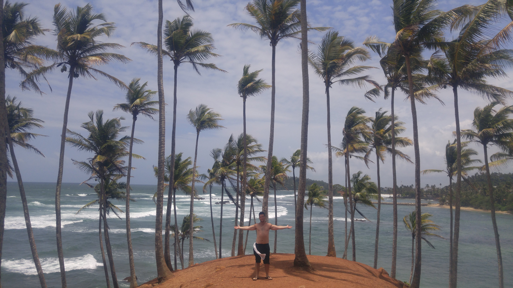

Go Back
Mirissa

Mirissa is a small coastal town in Southeast Sri Lanka. This was one of my favourite stops during my time here. There are many beautiful beaches and interesting activities to do in the area which include whale watching and visiting the nearby Galle Dutch fort. I only spent 2 days here but would've loved to have more time to enjoy the laid back pace of life, beautiful beaches and fun nightlife options. Here are my recommendations for Mirissa.
Secret Beach can be found quite easily on google maps or Maps.me. Due to the towns size it's easy enough to walk here from most places in the town or its equally easy to find a tuk tuk or transport for at least most of the way there. The road near the descent to secret beach gets a bit rough so maybe tuk tuks can go down the final bit. Once you arrive you'll find a beach club/ restaurant type place in front of an idyllic looking beach. It's a good place to come visit for a swim and a drink.
Coconut Tree Hill is one of the famous natural landmarks of the area. Here you'll find the well-spaced coconut trees with a great backdrop of the Indian Ocean. It's very easy to walk to as it's just at the end of the main beach in the town.
On your way to Coconut Tree Hill you'll likely pass Veragalle Point. There is a little island that you can easily get to from the beach which offers nice views of the beach and town behind it. This part of the beach was a bit quieter than the main beach and is a nice area to come relax, sunbathe and swim.
Galle Dutch Fort is about 50 minutes north of Mirissa and offers a great insight to the history of the area. It was originally built by the Portuguese in the 16th century and was then further extended by the Dutch in the 17th century. There are many different gates and bastions that you'll see as you walk around most notably: the moon bastion with the clocktower, the sun bastion, the old gate and the main gate. There are plenty of museums and old churches as well as souvenir shops and different tourist accomodations and restaurants. From Mirissa it's easy to take a public bus along the main highway up to Galle for a very cheap price. I stopped in Galle on my way to Colombo to catch my flight so I didn't spend more than a few hours exploring the area but it would be a good place to spend a night or two to really explore and learn about the interesting history.
An activity that I wasn't able to do due to the seasonality was go whale watching. This is a famous activity that many people do in Mirissa. You can see the largest animals on the planet: the blue whale. The best time to go whale watching is between December and April. This is an experience I would've liked to have when visiting Mirissa. Many accomodations and tour companies right on the beach offer tickets on any given day. When I was there they offered tickets but didn't guarantee that you'd see any whales because it was low season. Many places had a policy that they'd return at least a portion of the money if you didn't spot any whales. Due to this it may be best to aim to visit during high season. I've heard though at the time of year when the whales aren't in Mirissa that they can be seen in Trincomalee on the central east coast of the country. This is another great example of the unique wildlife that Sri Lanka offers.
There was a lot of typical Sri Lankan food in Mirissa. Due to its location on the shore the seafood here is really good. My personal favourite restaurant that I experienced in Mirissa was called Number 1 Dewmini Roti Shop. They had a large variety of delicious rotis here as well as very hospitable staff. I highly recommend this restaurant. There are also many good Indian restaurants and roti restaurants along the main road that you can check out. Below is a chicken vindaloo.
I enjoyed my brief stay at the Hangover Hostel in Mirissa. It was well situated along the main beach only a short walk away from Coconut Tree Hill, many restaurants, beach clubs and tour companies. If you're interested in staying at a hostel in Mirissa I recommend this one. They also had a good food menu from what I remember and offer a fun social experience with other travellers.